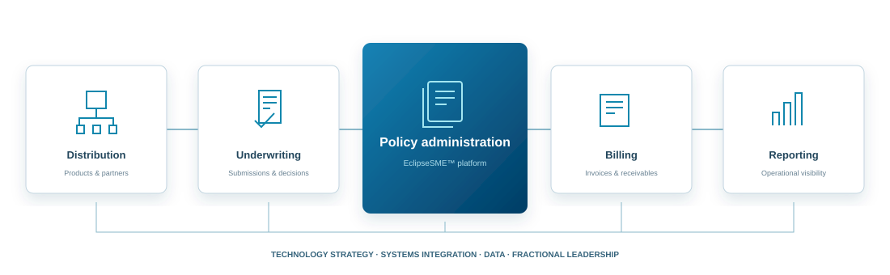

01
Define the right technology direction
Strategic consulting, solution architecture and the Eclipse Totality Assessment™ to identify risks, priorities and a practical roadmap.
STRATEGY & ASSESSMENTEclipseIQ brings consulting, software engineering and fractional leadership together to modernize insurance technology — with EclipseSME™ at the core of our software offering.

Bring the right perspective to the challenge — and the technical capability to move it forward.
Strategic consulting, solution architecture and the Eclipse Totality Assessment™ to identify risks, priorities and a practical roadmap.
STRATEGY & ASSESSMENTCustom software engineering, systems modernization, integration and data migration aligned with your business requirements.
ENGINEERING & MODERNIZATIONFractional CIO / COO / CTO expertise to guide investment, support teams and oversee technology and operational change.
FRACTIONAL EXECUTIVE LEADERSHIPBring underwriting, policy administration, billing and reporting together. EclipseSME supports MGAs, insurers and specialty insurance businesses with cloud software shaped around their operations.
Our team draws on decades of insurance technology, operations and digital transformation experience. We understand the decisions behind the systems, as well as the work required to improve them.
From reinsurance and analytics to enterprise architecture and transformation, we connect specialist expertise to your operational priorities.
Identify vulnerabilities and prioritize improvements.
Review processes, governance and documentation.
Strengthen leadership and operational capability.
A technology roadmap, delivery expertise or experienced leadership. Start with a conversation.